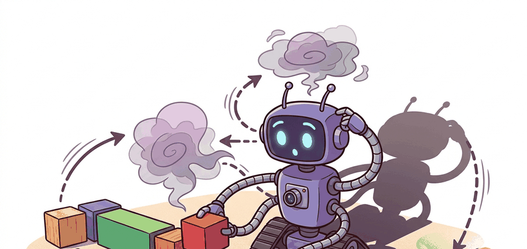

"When the model becomes the engine, compounding error stops being abstract: it shows up as controls that lose their meaning."
A World Model That Tries To Replace The Engine

GameNGen and Oasis are useful because they make the claim maximally concrete: the model is not only predicting a future clip, it is trying to serve as the interactive engine itself.
Compare the two systems through the lens of controllability and substrate. GameNGen shows a diffusion-based neural engine for a classic game; Oasis shows an interactive generated world that exposed both the promise and instability of frame-by-frame generative environments.
When the model becomes the engine, compounding error stops being abstract. It shows up immediately as broken affordances, drifting map logic, or controls that lose their meaning.
Problem First
A world model can assist simulation, or it can attempt to become the simulator. Neural game engines matter because they reveal what breaks when the model itself must sustain interactive dynamics in real time, not merely continue a clip or produce synthetic training data offline.
Core Model
GameNGen models an interactive environment by predicting the next frame conditioned on past frames and actions, then reusing its own output autoregressively. The challenge is compounding error: $$o_{t+1} \sim p_\theta(o_{t+1} \mid o_{\le t}, a_t), \qquad o_{t+k} \text{ depends on generated } o_{t+1:t+k-1}.$$ Every small artifact can become part of the state the next step conditions on.
The GameNGen paper is important because it reports real-time interactive simulation of DOOM with a diffusion model and foregrounds long-trajectory stability as a central technical hurdle. Oasis, first framed as a generated game world and more recently extended toward physical-AI uses, exposed the same phenomenon publicly: interactivity is compelling, but state drift and inconsistency quickly become visible when the model is the engine.
The lesson for embodied AI is that real-time generation pressure is informative. It reveals whether the model's internal state is robust enough to support long action loops rather than just short cinematic continuations.
Run repeated user or agent actions through the model in real time, track whether identities, map structure, and action semantics remain stable, and count how long the world remains playable before semantic drift or catastrophic resets appear.
Minimal Probe
The probe below measures playable horizon. It counts how many interactive steps remain semantically valid before the neural engine drifts out of the task manifold.
# Count how long a neural game engine remains semantically valid.
# Horizon matters more than one impressive generated screenshot.
validity = [1, 1, 1, 1, 0, 0]
playable_horizon = validity.index(0)
survival_rate = sum(validity) / len(validity)
print({"playable_horizon": playable_horizon, "survival_rate": round(survival_rate, 2)}){'playable_horizon': 4, 'survival_rate': 0.67}
Expected behavior: The model remains semantically valid for four steps before drift appears. That is the relevant operational metric for an interactive engine, because the first few frames may look convincing even when the loop is already unstable.
There is not yet a single stable, open, plug-and-play neural-engine library that erases all of this complexity. The practical shortcut is to use the official GameNGen project materials or the Oasis project page as reference implementations, then wrap them in your own horizon and controllability harness rather than treating the demo itself as the benchmark.
Practical Recipe
- Report playable horizon explicitly.
- Store action traces next to generated clips so replay can reveal whether drift was visual, semantic, or control-related.
- Measure control lag, because real-time feel is part of the engine claim.
- Use neural engines for stress testing and representation research before trusting them as full control simulators.
Real-time interactivity can make weak models look stronger than they are because the early frames are impressive. Always score playable horizon, not only first-frame fidelity or short clips.
An embodied-navigation researcher can use a neural engine to explore how an agent reacts to unusual corridor layouts or moving distractors. That is valuable for stress testing. It is different from using the engine as the sole truth source for collision-rich control, because one semantic glitch in the generated world can invalidate the policy lesson.
The frontier is convergence between neural engines, interactive world models, and physical-AI platforms. GameNGen and Oasis showed that real-time interaction is possible. The open problem is how to keep that interaction semantically stable for long horizons and safety-critical tasks rather than only for demos or entertainment-oriented environments.
For interactive world models with stronger platform ambitions, continue to Section 39.4. For evaluation methodology, jump ahead to Section 39.7. For model-based control in compact latent spaces rather than fully generated frames, compare with Section 38.5.
These systems are educational because they expose compounding error in the most intuitive possible way: the world stops making sense. In a benchmark table that may appear as a fidelity drop. In an interactive engine it appears as broken affordances, shifting geometry, or controls that stop meaning the same thing across time.
The public fascination with Oasis was therefore scientifically useful. It showed many people, very quickly, what researchers already know: when a generative model becomes the environment, persistence and action semantics become the whole game.
What is the difference between a neural game engine that looks convincing for ten seconds and one that is reliable enough to support agent research or safety evaluation?
Neural game engines are the sharpest stress test for generative world models because compounding error becomes immediately visible as broken interactivity.
Design a replay artifact for a neural engine benchmark. Which fields would you save so another researcher could diagnose whether failure came from control lag, semantic drift, or object-identity collapse?
Bibliography & Further Reading
Primary References And Tools
Valevski, D. et al.. "Diffusion Models Are Real-Time Game Engines." (2024). https://arxiv.org/abs/2408.14837
GameNGen is the primary academic reference for a real-time neural engine.
GameNGen Project Page. https://gamengen.github.io/
The project page is useful for demonstrations and reported metrics.
Oasis Project Page. https://oasis-model.github.io/
Oasis is a concrete public reference for interactive generated worlds and their limitations.